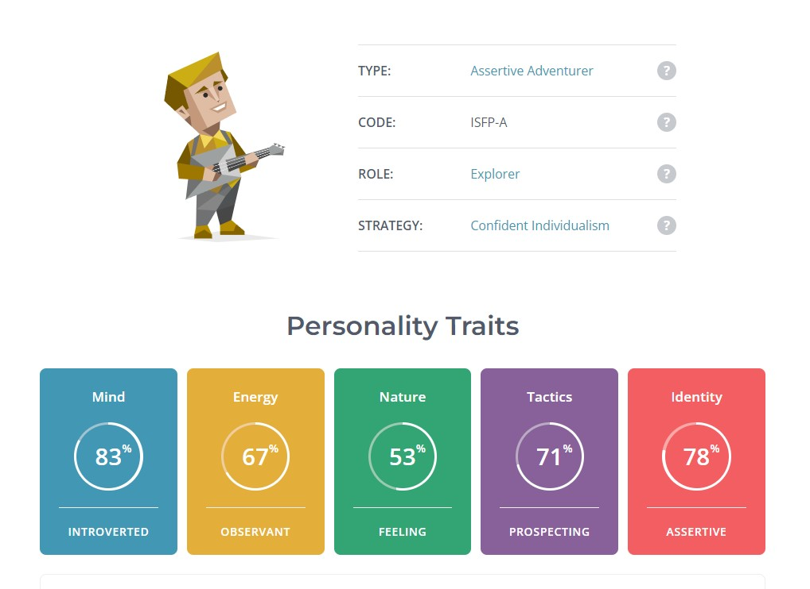
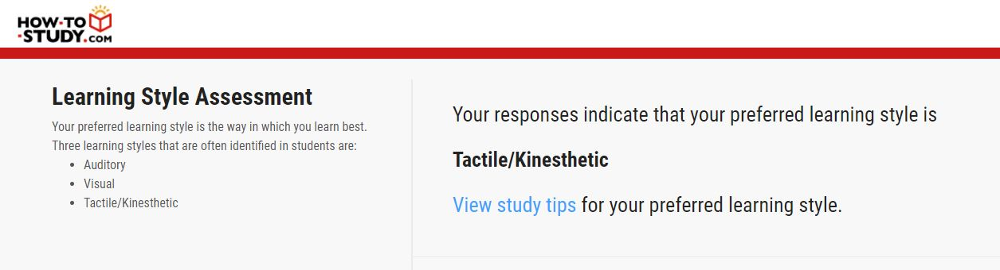
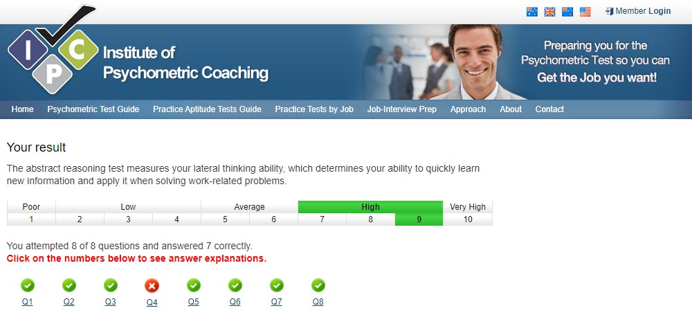

‘The purpose of the Myers-Briggs Type Indicator® (MBTI®) personality inventory is to make the theory of psychological types described by C. G. Jung understandable and useful in people's lives. The essence of the theory is that much seemingly random variation in the behavior is actually quite orderly and consistent, being due to basic differences in the ways individuals prefer to use their perception and judgment.
"Perception involves all the ways of becoming aware of things, people, happenings, or ideas. Judgment involves all the ways of coming to conclusions about what has been perceived. If people differ systematically in what they perceive and in how they reach conclusions, then it is only reasonable for them to differ correspondingly in their interests, reactions, values, motivations, and skills."
In developing the Myers-Briggs Type Indicator [instrument], the aim of Isabel Briggs Myers, and her mother, Katharine Briggs, was to make the insights of type theory accessible to individuals and groups. They addressed the two related goals in the developments and application of the MBTI instrument:
The identification of basic preferences of each of the four dichotomies specified or implicit in Jung's theory.
The identification and description of the 16 distinctive personality types that result from the interactions among the preferences.’ (The Myers & Briggs Foundation - MBTI® Basics, 2022)
_
“A learning style is the way that different students learn. A style of learning refers to an individual’s preferred way to absorb, process, comprehend and retain information. The four key learning styles are: visual, auditory, tactile and kinaesthetic. Visual learners prefer to use pictures, graphs and images to organize and communicate their thoughts and learn best from using flash cards. Auditory learners prefer to listen, discuss, memorize and debate in class. They learn best from audiobooks rather than print ones. Tactile learners learn best by touch and movement—they find opportunities to take part in demonstrations, writing or building models. Kinesthetic learners prefer to use their whole body in the learning process—they use gestures to communicate ideas and learn best in a hands-on environment.
A learning style refers to an individual’s method of making sense of new material, commonly done through sight, touch and sound. Taste and smell, although not as frequently used as the last three, can still be effective when aiming to solidify ideas in our brain.” (Learning Style Definition and Meaning – Top Hat, 2022)
_
“An abstract reasoning test is an assessment that uses shapes and patterns to assess your problem-solving skills and ability to spot logical series. For example, you might need to select which image completes a sequence, is missing from the overall picture, or doesn’t correlate to the other images shown.” (Abstract Reasoning Test: Free Practice Tests & Tips, 2022)
_
The results combined with the three of these tests do not come as a surprise to me. I can be an introverted person most of the time; however, I am comfortable coming out of my shell when needed. Being recognised as having an observant mental energy trait is quite fitting as I do like to better understand what is in front of me before committing my intuitiveness. I am a tactile/kinaesthetic learner which means to me that I am hands-on. I like to feel and do opposed to hearing and reading. I have a ‘higher than average lateral thinking ability, which determines my ability to quickly learn new information and apply is when solving work-related problems.’ (Psycometric Institute 2022)
My results of these tests show strong individual mannerisms which in my opinion is something that a team member must have. My behaviours would be a positive aspect to a team as being able to work autonomously is needed as much as being able to work collaboratively.
Taking these results into account when forming a team, I believe that these traits would match best with people that have similar results and like-mindedness. I would also certainly like to find someone that is more extraverted to be a part of my time, as they may be times where that voice may be needed.
_